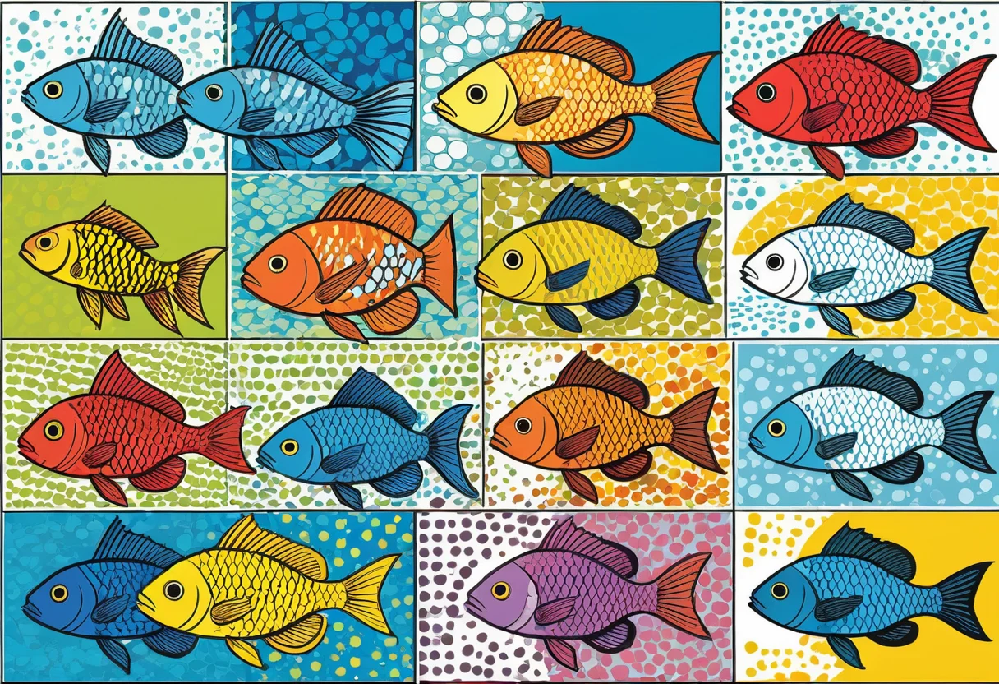

Gesellschaftsbecken richtig zusammenstellen
Ein Gesellschaftsbecken ist der Klassiker der Aquaristik: verschiedene Fischarten, die sich friedlich ein Becken teilen, farbenfroh durchs Wasser ziehen und ein lebendiges, harmonisches Bild abgeben. Doch die Zusammenstellung eines funktionierenden Gesellschaftsbeckens ist anspruchsvoller, als es auf den ersten Blick scheint. Nicht alle Fische vertragen sich – manche sind Revierkämpfer, andere sehen kleinere Arten als Futter an, wieder andere brauchen völlig unterschiedliche Wasserwerte. Wer diese Fallstricke kennt und systematisch vorgeht, schafft ein Aquarium, das über Jahre Freude bereitet. In diesem Guide erfährst du alles über die richtige Planung, Vergesellschaftung und Einrichtung eines Gesellschaftsbeckens.
Der Begriff „Gesellschaftsbecken“ bezeichnet ein Aquarium, in dem mehrere Fischarten aus unterschiedlichen Regionen und Familien gemeinsam gehalten werden. Anders als ein Artbecken (nur eine Art) oder ein Biotopbecken (nur Arten aus einer Region) steht beim Gesellschaftsbecken die optische Vielfalt und das harmonische Miteinander im Vordergrund. Die Kunst liegt darin, Arten zu wählen, die sich in ihren Ansprüchen nicht widersprechen und sich gegenseitig nicht belästigen oder gefährden.
Die wichtigste Regel: Größe und Schwimmverhalten
Die Beckengröße bestimmt, welche und wie viele Fische du halten kannst. Als Faustregel gilt: 1 Zentimeter Fisch pro Liter Wasser ist ein grober Richtwert – aber diese Regel ist mit Vorsicht zu genießen. Aktive Schwimmer wie Barben oder größere Salmler brauchen deutlich mehr Platz als ruhige Bodenbewohner. Ein 200-Liter-Becken (100 cm Länge) ist der ideale Einstieg für ein Gesellschaftsbecken. Es bietet genug Raum für eine interessante Gemeinschaft, bleibt aber in der Pflege überschaubar. Kleiner sollte das Becken nicht sein, denn mit abnehmender Beckengröße steigt das Risiko von Revierkonflikten und Wasserwertproblemen.
Achte bei der Auswahl nicht nur auf die Endgröße der Fische, sondern auch auf ihr Schwimmverhalten. Manche Arten (wie Keilfleckbarben oder Rüsselbarben) sind schnelle Dauer schwimmer und brauchen lange Becken mit freiem Schwimmraum. Andere (wie Zwergbuntbarsche oder Kampffische) sind eher Revierfische, die feste Rückzugsorte benötigen. In einem Gesellschaftsbecken sollten alle drei Zonen besetzt sein: oberflächennaher Bereich, freie Wassersäule und Bodenzone. So wird der vorhandene Raum optimal genutzt und Konkurrenz vermieden.
Wasserwerte – die unsichtbare Grenze
Der häufigste Fehler bei der Zusammenstellung eines Gesellschaftsbeckens ist die Vernachlässigung der Wasserwerte. Fische aus Weichwasserregionen (wie die meisten südamerikanischen Salmler und Zwergbuntbarsche) brauchen weiches, saures Wasser (GH 3–8 °dGH, pH 6,0–7,0). Fische aus Hartwasserregionen (wie viele Lebendgebärende aus Mittelamerika) benötigen härteres, alkalischeres Wasser (GH 10–20 °dGH, pH 7,0–8,0). Wer beide Gruppen zusammen in ein Becken setzt, zwingt sie in Kompromisse, die auf Dauer krank machen.
Entscheide dich daher von vornherein für eine Richtung. Ein südamerikanisch geprägtes Gesellschaftsbecken mit Salmlern, Zwergbuntbarschen und Panzerwelsen ist eine der beliebtesten und bewährtesten Kombinationen. Alternativ kannst du ein asiatisch geprägtes Becken mit Barben, Rasboren und Schmerlen einrichten. Oder du wählst einen robusten Mittelweg mit Fischen, die einen weiteren Toleranzbereich haben, wie Mollys, Platys, Schwertträger und Antennenwelse. Wichtig ist, dass sich alle Bewohner im selben Wasserwertbereich wohlfühlen.
Bewährte Vergesellschaftungen für Einsteiger
Hier sind drei erprobte Kombinationen, die in der Praxis seit Jahren funktionieren.
Das südamerikanische Weichwasserbecken (ab 160 Liter)
Dieses Becken ist der Klassiker schlechthin. Die Basis bilden 15 bis 20 Neonsalmler oder Rote von Rio-Salmler als Schwarmfisch im freien Wasser. Dazu kommen 6 bis 8 Panzerwelse (z. B. Corydoras aeneus oder Corydoras panda) als Bodenbewohner. Als Blickfang dienen 2 bis 3 Zwergbuntbarsche (Apistogramma cacatuoides oder Apistogramma borellii), die sich in der unteren bis mittleren Beckenhälfte aufhalten. Ergänzt wird die Gemeinschaft durch 6 bis 8 kleine Harnischwelse (Otocinclus) als Algenfresser. Die Bepflanzung ist dicht mit Vallisnerien, Javafarn, Anubias und einer CO₂-gedüngten Teppichpflanze. Wasserwerte: GH 4–8 °dGH, pH 6,0–6,8, Temperatur 24–27 °C.
Das asiatische Barbenbecken (ab 200 Liter)
Dieses Becken lebt von Bewegung und Farbe. Die Hauptgruppe bilden 15 bis 20 Keilfleckbarben oder Sumatrabarben, die als Schwarmfisch unermüdlich durch das Becken ziehen. Dazu gesellen sich 8 bis 10 Zebrabärblinge (Danio rerio) im oberen Bereich. Als Bodenpersonal dienen 6 bis 8 Prachtschmerlen (Chromobotia macracanthus) oder Dornaugen (Pangio kuhlii). Die Schmerlen sind gesellig und brauchen eine Gruppe ab 5 Tieren. Ein paar Saugschmerlen (Gyrinocheilus aymonieri) helfen bei der Algenbekämpfung. Wasserwerte: GH 8–15 °dGH, pH 6,5–7,5, Temperatur 24–26 °C. Wichtig: Barben sind manchmal flossenknipsend – setze keine langflossigen Fische dazu.
Das robuste Lebendgebärenden-Becken (ab 100 Liter)
Dieses Becken ist ideal für Einsteiger, weil die Fische sehr robust sind. Die Hauptgruppe besteht aus 6 bis 8 Platys, 6 bis 8 Schwertträgern und 6 bis 8 Mollys – alles Lebendgebärende, die sich bei guten Bedingungen von selbst vermehren. Dazu kommen 6 Panzerwelse und 2 bis 3 Antennenwelse als Bodenbewohner. Die Bepflanzung sollte dicht sein, damit der Nachwuchs Rückzugsmöglichkeiten hat. Wasserwerte: GH 10–20 °dGH, pH 7,0–8,0, Temperatur 24–26 °C. Der Nachteil dieses Beckens: Die Vermehrungsfreude der Lebendgebärenden kann zu Überbesatz führen – ein zweites Becken für die Abgabe von Jungtieren ist empfehlenswert.
Die richtige Besatzdichte berechnen
Neben der Faustregel „1 cm Fisch pro Liter“ gibt es eine genauere Methode, die auch die Körperform berücksichtigt. Diese unterscheidet zwischen:
- Schlanken Fischen (Salmler, Barben, Bärblinge): 1 cm Fisch pro 1 Liter Wasser
- Kompakten Fischen (Platys, Mollys, Skalare): 1 cm Fisch pro 1,5–2 Liter Wasser
- Bodenfischen (Panzerwelse, Schmerlen): 1 cm Fisch pro 1,5 Liter Wasser
- Großen Fischen (Buntbarsche, größere Welse): stark artenabhängig, meist ab 100 Liter pro Tier
Bei einem 200-Liter-Becken ergeben sich nach dieser Formel maximal etwa 120 bis 150 cm Fischlänge bei einer Mischung aus verschiedenen Typen. Das entspricht zum Beispiel 15 Salmlern (40 cm), 10 Panzerwelsen (30 cm), 3 Zwergbuntbarschen (15 cm) und 6 Otocinclus (20 cm) – insgesamt 105 cm. Von diesen Werten solltest du nicht mehr als 10 bis 15 Prozent nach oben abweichen.
Einrichtung – Struktur schafft Harmonie
Ein gut eingerichtetes Gesellschaftsbecken bietet allen Fischen Rückzugsorte und Reviere. Die Einrichtung sollte in drei Zonen gegliedert sein. Die Rückwand wird mit hohen Pflanzen (Vallisnerien, Rotala, Limnophila) oder einer Hintergrundstruktur aus Wurzeln und Steinen gestaltet. Der Mittelbereich bietet freien Schwimmraum, unterbrochen von einzelnen Strukturelementen wie einem großen Wurzelholz oder einem Steinhaufen. Der Vordergrund bleibt niedrig – hier kannst du einen Teppich aus Bodendeckern oder flachen Steinen anlegen.
Wichtig sind mehrere Versteckmöglichkeiten, besonders für scheue Arten oder bei der Vergesellschaftung mit etwas dominanteren Fischen. Höhlen aus Ton, Kokosnussschalen oder übereinander geschichtete Steine bieten Bodenbewohnern und Zwergbuntbarschen Revierzentren. Pflanzen mit großen Blättern (Anubias, Echinodorus) spenden Schatten und Schutz. Eine dichte Bepflanzung in den Randbereichen und eine freie Schwimmzone in der Mitte – das ist die ideale Grundstruktur für ein Gesellschaftsbecken.
Fische, die du meiden solltest
Manche Fische sind für das Gesellschaftsbecken grundsätzlich ungeeignet. Große Buntbarsche wie Oscars (Astronotus ocellatus) oder Jack Dempseys werden bis zu 30 cm groß, sind revierbildend und fressen alles, was ins Maul passt. Sie gehören in Artbecken ab 500 Litern. Auch Diskusfische sind eine Herausforderung: Sie brauchen hohe Temperaturen (28–30 °C) und beste Wasserqualität. Die meisten Gesellschaftsfische fühlen sich bei diesen Temperaturen nicht wohl. Skalare können mit größeren Salmlern und Welsen gehalten werden, aber junge Skalare sehen kleinere Fische als Futter an – hier ist Vorsicht geboten.
Auch bei den „friedlichen“ Fischen gibt es Ausnahmen. Sumatrabarben sind berüchtigt dafür, die langen Flossen von Skalaren und Schleierfischen zu attackieren. Prachtschmerlen sind gesellige, aber sehr aktive Fische, die schwächere Mitbewohner stressen können. Saugschmerlen werden mit der Zeit revierbildend und aggressiv gegenüber anderen Bodenbewohnern. Informiere dich vor dem Kauf immer genau über das Verhalten der Adulttiere – nicht nur über die Jungfische, wie sie im Handel angeboten werden.
Der häufigste Fehler beim Gesellschaftsbecken ist der Impulskauf. Ein niedlicher Jungfisch im Zoofachhandel kann innerhalb eines Jahres zur Aggressionsmaschine heranwachsen. Plane deinen Besatz mindestens vier Wochen, bevor du den ersten Fisch kaufst.
Eingewöhnung neuer Fische
Eine sorgfältige Eingewöhnung ist überlebenswichtig. Neue Fische werden im Transportbeutel auf der Wasseroberfläche des Aquariums aufgelegt (20 Minuten Temperaturangleichung). Danach öffnest du den Beutel und gibst alle 10 Minuten eine kleine Menge Aquarienwasser hinzu. Nach 30 bis 45 Minuten können die Fische mit einem Kescher ins Becken gesetzt werden – das Transportwasser gehört nicht in das Aquarium, um Keime und mögliche Schadstoffe fernzuhalten.
In den ersten Tagen nach dem Einsetzen solltest du die Beleuchtung reduzieren und wenig füttern. Die Fische müssen ihr neues Revier erkunden und sich an die anderen Arten gewöhnen. Leichte Jagdszenen sind normal, solange sie nicht in Dauerstress ausarten. Beobachte die Gruppe genau: Werden neue Fische dauerhaft gejagt oder von Futterplätzen vertrieben, musst du die Konstellation überdenken. Manchmal hilft bereits eine Umgestaltung der Einrichtung, um bestehende Reviere aufzulösen.
▶ Aquarium-Einsteiger-Sets bei Amazon vergleichen
Fazit – Harmonie ist planbar
Ein funktionierendes Gesellschaftsbecken ist kein Zufallsprodukt, sondern das Ergebnis sorgfältiger Planung. Achte auf kompatible Wasserwerte, ausreichende Beckengröße, die richtige Anzahl und Mischung der Arten sowie eine durchdachte Einrichtung mit Versteckmöglichkeiten und Zonen. Mit diesen Grundlagen schaffst du ein Aquarium, das nicht nur wunderschön anzusehen ist, sondern in dem sich alle Bewohner wohlfühlen. Ein gut zusammengestelltes Gesellschaftsbecken ist ein Stück lebendige Unterwasserwelt, das dir jeden Tag aufs Neue Freude bereiten wird.
Mehr zur Haltung einzelner Fischarten und ihren Ansprüchen findest du in unseren Artikeln Beliebteste Aquarienfische und Vergesellschaftung von Aquarienfischen.